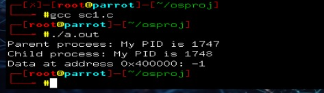
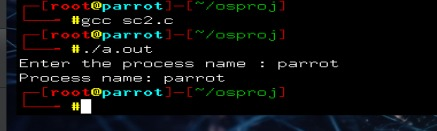
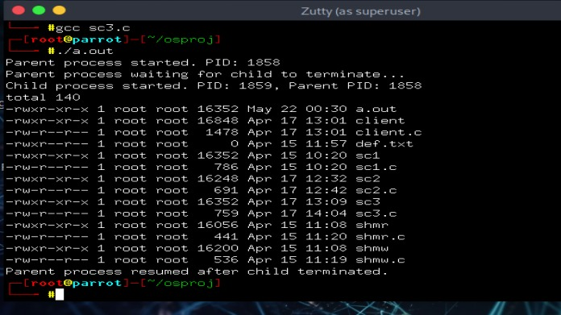

C Programs
Fork and Ptrace Example
#include <stdio.h>
#include <stdlib.h>
#include <sys/ptrace.h>
#include <sys/types.h>
#include <sys/wait.h>
#include <unistd.h>
int main() {
pid_t child;
long data;
int status;
child = fork();
if (child == 0) {
printf("Child process: My PID is %d\n", getpid());
sleep(5);
exit(0);
} else if (child > 0) {
printf("Parent process: My PID is %d\n", getpid());
wait(&status);
ptrace(PTRACE_ATTACH, child, NULL, NULL);
waitpid(child, &status, 0);
data = ptrace(PTRACE_PEEKDATA, child, (void*)0x400000, NULL);
printf("Data at address 0x400000: %ld\n", data);
ptrace(PTRACE_DETACH, child, NULL, NULL);
} else {
perror("fork");
exit(1);
}
return 0;
}

Change Process Name
#include <stdio.h>
#include <stdlib.h>
#include <sys/prctl.h>
#include <errno.h>
#include <string.h>
#define _GNU_SOURCE
int main() {
char process_name[16];
printf("Enter the process name : ");
fgets(process_name, sizeof(process_name), stdin);
size_t len = strlen(process_name);
if (process_name[len - 1] == '\n') {
process_name[len - 1] = '\0';
}
if (prctl(PR_SET_NAME, process_name, 0, 0, 0) == -1) {
perror("prctl");
exit(EXIT_FAILURE);
}
if (prctl(PR_GET_NAME, process_name, 0, 0, 0) == -1) {
perror("prctl");
exit(EXIT_FAILURE);
}
printf("Process name: %s\n", process_name);
return 0;
}

Fork and Exec Example
#include <stdio.h>
#include <stdlib.h>
#include <sys/types.h>
#include <sys/wait.h>
#include <unistd.h>
int main() {
pid_t pid;
int status;
printf("Parent process started. PID: %d\n", getpid());
pid = fork();
if (pid < 0) {
perror("Fork failed");
exit(EXIT_FAILURE);
} else if (pid == 0) {
printf("Child process started. PID: %d, Parent PID: %d\n", getpid(), getppid());
execl("/bin/ls", "ls", "-l", NULL);
perror("execl failed");
exit(EXIT_FAILURE);
} else {
printf("Parent process waiting for child to terminate...\n");
wait(&status);
printf("Parent process resumed after child terminated.\n");
}
return 0;
}
